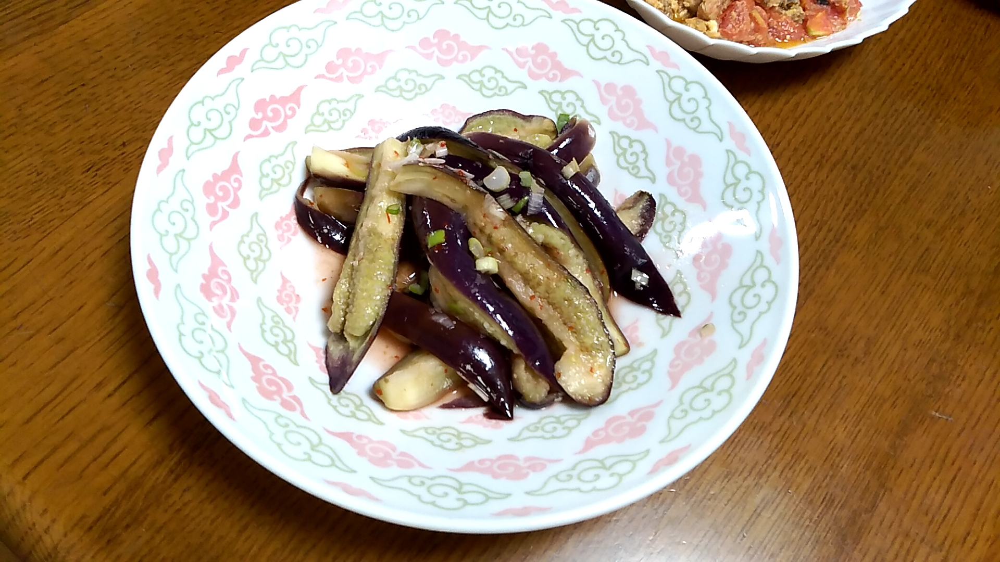

Tasty foods/drinks ideas by Team 5
Top
Tips
Contributors
About

ナスの香味あえ
by 小山祐
材料
ナス3～5本
ねぎ 15g
しょうが 5g
酢 大さじ 2
砂糖 大さじ 1
豆板醤 小さじ 1
作り方
ナスに切り込みをいれてラップにつつみ、600wの電子レンジで5分温める。
ねぎ、しょうが、酢、砂糖、豆板醤を混ぜて香味だれを作る。
レンジから取り出したナスを氷水に１５分ひたして冷ます。
ナスの水気をとり、きりこみから手で割く。
香味だれにナスをからめる。
出来上がり